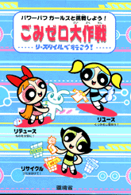
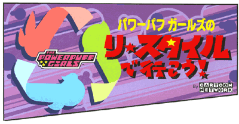
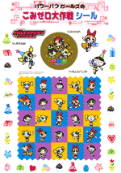
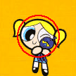
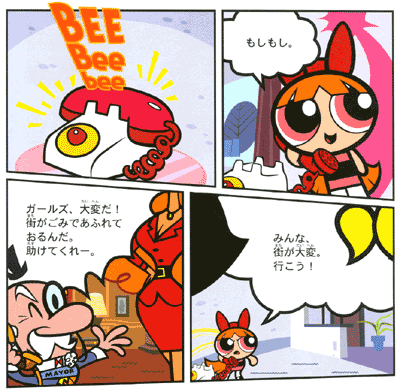
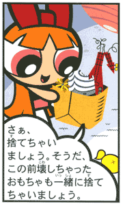
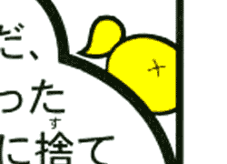
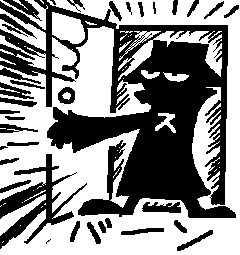

パワーパフ ガールズのリ・スタイルで行こう！ |
||||||||||||||||||||||||
|  |
なにがあった、環境省 ！？ |
|||||||||||||||||||||||
story |
|
ここはタウンズビル。そしてガールズたちの家。 お菓子とか食べてゴミをいっぱいだしているガールズ。 そこで市内をパトロールするガールズ。ほんとに街はゴミでいっぱいだった！ どうしようもなく、しょんぼりして家に戻るガールズ。 そこにはプリンセスが！ そこでガールズはプリンセスを反面教師としてヒラメイタ！ そんなガールズを見てほほえむプロフェッサー。 ブロッサム「捨てない、リデュース」 今日も街は救われた。ありがとうパワーパフガールズ。みんなも「リ・スタイル」にチャレンジしてね。 |
impression |
|
んーとまあ、この発行物はこの内容を広く伝えるのが趣旨だろうから、遠慮無くストーリーはすべて紹介してみました。 なんで、パワパフ？って思ってたんだけど、 このタイトル見てなんとなく納得。リサイクルマークなっているガールズ。ようするに「リデュース」「リユース」「リサイクル」の「3R」がテーマであるため、3人娘が選ばれたってことなんだと思う。 一応教材ってことになっているので、本そのものは学習ノートって感じになってます。 教材部分は書き込み式ノート風になっていて、通常ゴミと資源ゴミを分別して重さはかって記録したり、ゴミを少なくする自由研究レポートとか。「いいゴミダイエット作戦ができたら日本環境協会まで報告してね」とか書いてたりする。マンガのほうはわりとあっさりしてるんだけど、こっちはかなりみっちり詰まっていてかなり細かい。 教材部分といっても、ガールズのカットがこれでもか、とばかりにちりばめられていて、華やかです。でも、どっかで見たようなカットばかり、まあそれはしょうがないか。 ちょっとうれしいのは、シールがついていること。 ただ、上記のように「確認シール」として使用することを前提としているので、シールとしてはちょっと納得いかない部分も。 それというのも、このように丸枠に収めなければいけないため、こんなふうに。→
さて、 ではいよいよマンガ部分へ進もう。 日本環境協会の趣旨には賛同するし、パワパフを広めた貢献度に対しては評価できる。ただし、うちのサイトはPpGコミック・サイトなので、ここでは純粋にマンガとして読んでみたい。 タイトルは「パワーパフ ガールズのリ・スタイルで行こう！」 その根拠としては、ガールズが小さいサイズの場合、線が細く、逆にアップになると線が異様に太い。セリフの量とフキダシの大きさがアンバランスなうえ、構図にちょっと違和感がある箇所が多い。 などだが、百聞は一見に如かず。ちょっと見てもらおう。  見ての通り、サイズによって線の太さが違う。 また、 もっとつっこもうと思っていたが、何回か読みなおしているうちにそれほど違和感が無くなってしまった。マンガとは不思議なものだ。これはこれでまあいいか、みたいな。 ただし、このマンガ、アメコミと同じ左から読むようになっていることは、私としては評価しとく。 ストーリーはある意味パワパフらしくない、といえばらしくないが、さすがにアニメのノリでやってしまうとこの冊子自体の主旨と大きく逸脱しそうなんで、良しとする。 そんなわけで、こっからはちょっとしたネタ編。 ゴミを捨てようとするブロッサム。 そのゴミに気になるモノが・・・ いやまてよ、なんか小さくないか？ それよりギターだ！ いやいやそんなことより、その右隅にあるソレはなんだ？ これは・・・・ 
バブ〜ルス！！！ あとは珍しいカット。 |
この本を入手するには |
|
ところで、これは全国の小・中学校に配られるので、現役小中学生は見る機会はあると思うが、もはやそんなところとは無縁となった「大きなお友達」はどうすればいいのか？ これは、財団法人 日本環境協会が実費で配布しているので、そこに注文すれば入手できる。 その後、こちらでも購入受付の窓口が。 参考リンク： Re-Style（パワパフ紹介記事1・関連記事2・特集ページ） |
補足と追記 |
|
環境省とPpG （2003/8/16追記） |
|
それにしても、環境省とPpGとは意外な組み合わせでしたね。 「そんなことはないっ！！」 あなたは超秘密探偵スカポン！！ 「三人娘だから『3R』にぴったりだとか、これで小学生も興味もってくれるからだとか、そんなヌルい理由だと本当に思っているんじゃないだろうね。違う！これはなるべくしてなった当然の起用さ」 いやー、でもそれくらいしかないでしょ、接点なんかそれほどないんだから 「君らはまだわからないのか。環境省という恐ろしい組織の秘密が。 え、と言いますと・・・ 「そう、これは環境省だからこそ『やるべきしてやった』結果なんだ。 そんな馬鹿な・・・ 「いいや、間違いない。その証拠に、環境省の名前にその野望の一端がちゃーんと明示されてるじゃないか」 環境・・・？ カン・キョー・・・？ カン？ うーんわかりません。 「まあわからないのもムリはないかな。この超秘密探偵だからこそ、わかった事実さ。 MOE すなわち『萌え』だ！！！！！」 な、なんと・・・ 「ふふふ、まあ、こいつらはそうそう表には出てこないからね。今回も下部組織の日本環境協会にやらせてるようだが、これからだよ。『環境』がどうこうって話になると、何故か萌系のキャラたちがいろいろ採用されてゆくはずさ。ははははっ、ではサラバだっ。」 ありがとう超秘密探偵〜。 参考リンク＞環境省 環境省の略語がMOEなのは本当。実際にRe-Styleのサイトを見てもらえばわかが、下のほうに「moe info」とある。「more info」ではなく「moe info」。「環境省情報」という意味だが・・・。 |
{kind=link}